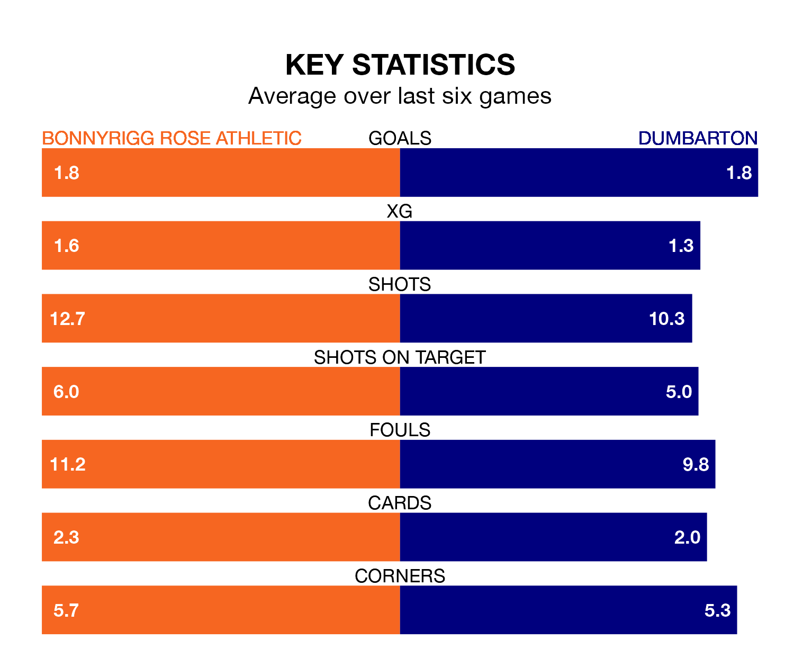

Dumbarton travel to New Dundas Park for Saturday's match against Bonnyrigg Rose Athletic looking to bounce back from defeat last time out in League Two.
The Sons, who sit fourth in the league after 18 games, fell to a 3-1 away defeat to Peterhead on Tuesday.
They face a Bonnyrigg Rose side who also lost their last match, a 3-2 defeat to Clyde, and who sit fifth in the table.
With 33 goals in 18 games so far this season, Dumbarton are the league's joint-second-highest scorers with 1.8 goals per game. And they are conceding fewer than average, letting in 23 goals at a rate of 1.3 per game.
Bonnyrigg Rose are also above average scorers, with 1.6 goals per game, compared to a league average of 1.4. They have also conceded 1.6 goals per game.
In Neil Martyniuk, Athletic have one of the league's sharpest shooters so far this season. He has notched eight goals in 18 appearances, to sit third in the scoring charts.
His goal rate of one every 195 minutes is slightly quicker than that of Tony Wallace, the Sons's top scorer with a goal every 153 minutes, and a total of seven goals in 18 games.
The home team are in mixed form in League Two, with two wins and a draw from their last six games.
And also with two wins and a draw over that period, the visitors' form is identical – they have both taken seven points from 18.
Over the last year, Bonnyrigg Rose and Dumbarton have played each other on five occasions. Dumbarton won three of them and they drew twice.
On average, Bonnyrigg Rose scored 0.2 goals and the Sons 1.6 in those matches.
Their last meeting was on November 4, when Dumbarton won 4-0 at home.
Updated: 10:50, 10/01/24